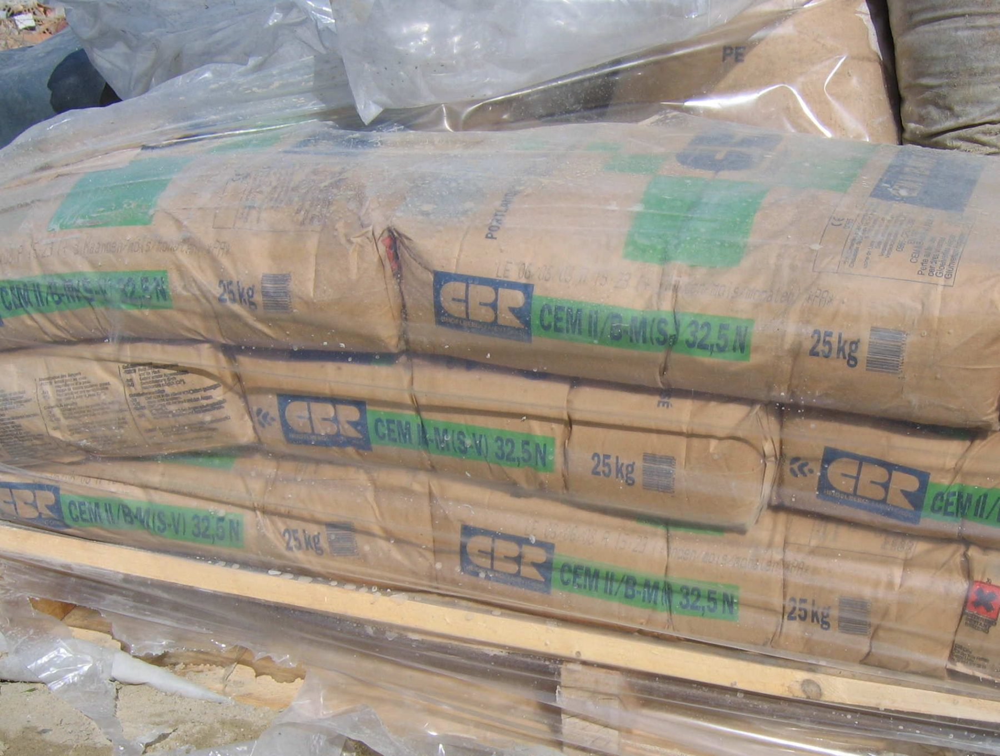
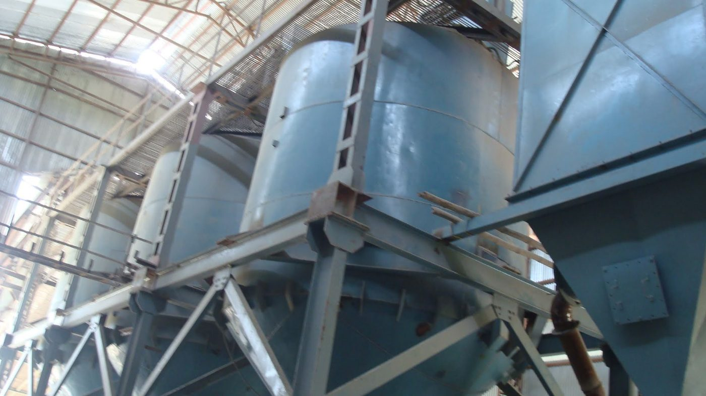
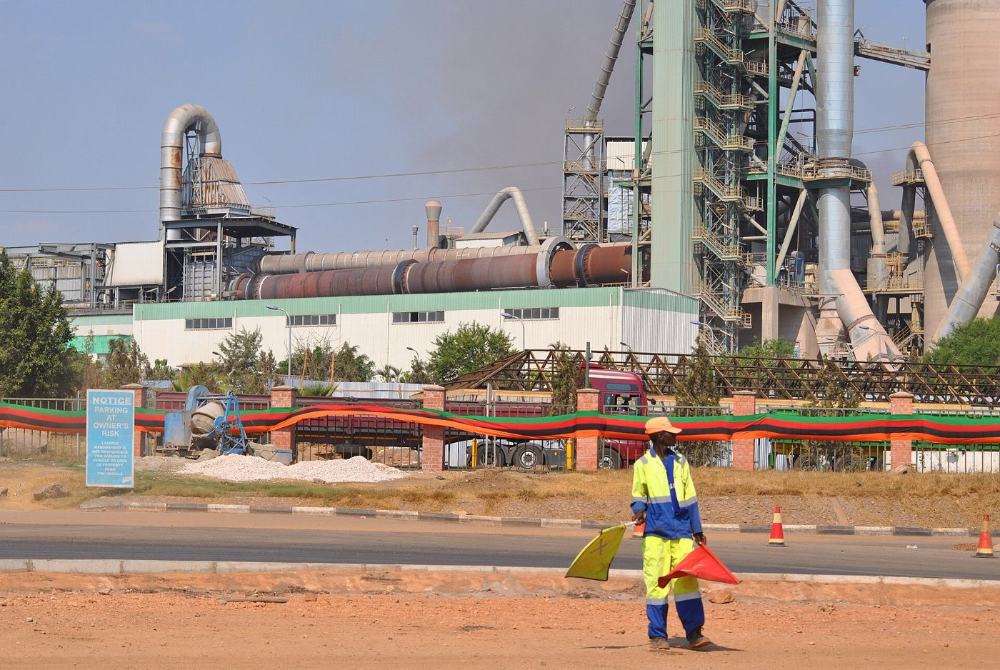
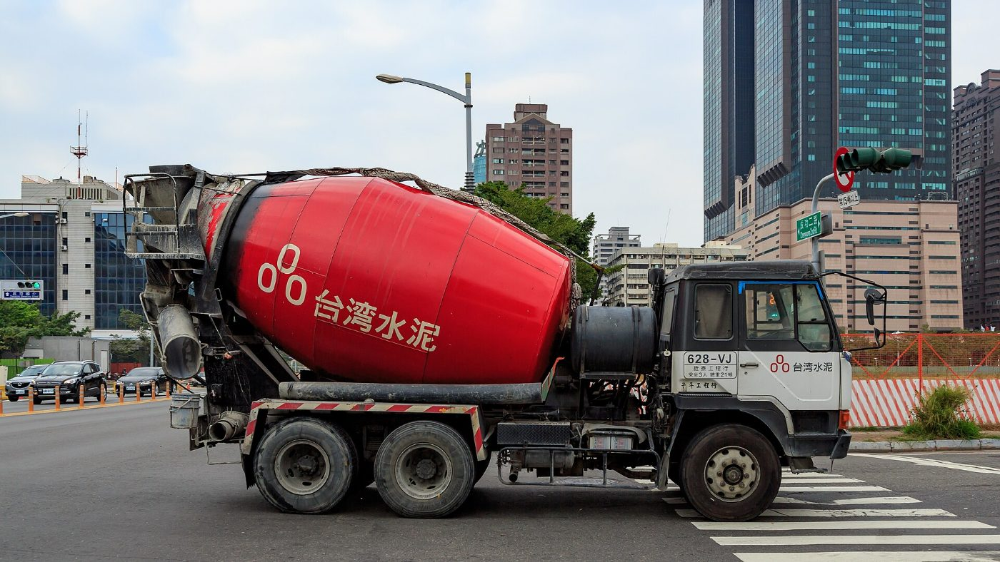
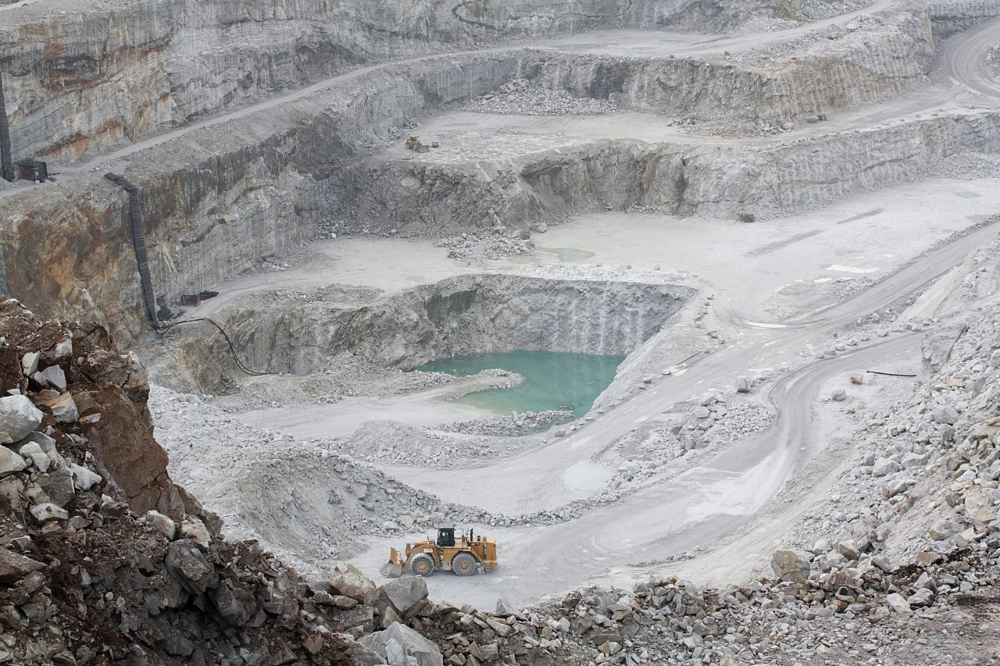

Produits
Trois ciments conformes à la norme NF EN 197-1 et certifiés par l'Office congolais de contrôle, du béton prêt à l'emploi à Kinshasa et des granulats de la carrière de Luvu.

Ciment Portland CEM I 42,5 R
Ciment à haute résistance initiale pour le béton armé, les éléments préfabriqués et les ouvrages d'art. Livré en sacs de 50 kg ou en vrac par citerne.
| Norme | NF EN 197-1 |
|---|---|
| Résistance à 2 jours | ≥ 20 MPa |
| Résistance à 28 jours | 42,5 – 62,5 MPa |
| Début de prise | ≥ 60 min |
| Conditionnement | Sac 50 kg · palette 40 sacs · vrac |
Ciment composé CEM II/A-L 42,5 N
Le ciment polyvalent des chantiers de bâtiment : fondations, poteaux, poutres, dalles. Bonne maniabilité, montée en résistance régulière, moins de retrait.
| Norme | NF EN 197-1 |
|---|---|
| Résistance à 7 jours | ≥ 16 MPa |
| Résistance à 28 jours | 42,5 – 62,5 MPa |
| Teneur en calcaire | 6 – 20 % |
| Conditionnement | Sac 50 kg · palette 40 sacs |

Ciment de maçonnerie CEM II/B-L 32,5 R
Pour les mortiers, enduits, joints et petits ouvrages. Prise rapide, finition facile, le sac le plus vendu chez nos revendeurs de quartier.
| Norme | NF EN 197-1 |
|---|---|
| Résistance à 2 jours | ≥ 10 MPa |
| Résistance à 28 jours | 32,5 – 52,5 MPa |
| Teneur en calcaire | 21 – 35 % |
| Conditionnement | Sac 50 kg |

Béton prêt à l'emploi, Kinshasa
Centrale de Limete : bétons C20/25 à C40/50, pompage jusqu'à 36 m, livraison en toupie de 6 et 8 m³ dans un rayon de 40 km. Commande la veille avant 15 h.
| Classes | C20/25 · C25/30 · C30/37 · C40/50 |
|---|---|
| Capacité | 90 m³/h |
| Flotte | 12 toupies · 2 pompes |
| Contrôle | Éprouvettes à 7 et 28 j sur chaque livraison |

Granulats calcaires concassés
Gravillons 5/15 et 15/25, sable de concassage 0/4 et tout-venant 0/31,5 issus de la carrière de Luvu. Chargement sur camion client ou livraison.
| Fractions | 0/4 · 5/15 · 15/25 · 0/31,5 |
|---|---|
| Norme | NF EN 12620 |
| Production | 600 000 t/an |
| Vente | Minimum 10 t, par tonne |
Fiches techniques et certificats
Documents à jour, valables pour les lots en circulation.
- Fiche technique CEM I 42,5 RPDF · 2 p. · 2026Télécharger
- Fiche technique CEM II/A-L 42,5 NPDF · 2 p. · 2026Télécharger
- Fiche technique CEM II/B-L 32,5 RPDF · 2 p. · 2026Télécharger
- Fiche de données de sécurité, cimentsPDF · 8 p. · 2025Télécharger
- Certificat de conformité OCCPDF · 1 p. · 2026Télécharger
- Conditions générales de ventePDF · 4 p. · 2026Télécharger
Contrôle qualité
Le laboratoire de l'usine réalise chaque jour des essais de finesse, de temps de prise et de résistance sur chaque broyeur. Chaque sac porte le numéro de lot et la date d'ensachage. Des sacs sont achetés anonymement chez les revendeurs et testés chaque mois.
Conseils de stockage
- Conserver les sacs à l'abri de la pluie et de l'humidité, sur palette, jamais à même le sol.
- Utiliser dans les trois mois suivant la date d'ensachage imprimée sur le sac.
- Ne pas empiler plus de dix sacs. Utiliser d'abord les sacs les plus anciens.
- Porter gants et lunettes : le ciment est irritant pour la peau et les yeux.
Demander un devis
Chantiers, préfabricateurs, revendeurs : réponse sous un jour ouvré. Pour un particulier, le comptoir de Matadi et nos revendeurs vendent au sac.

Coulage de béton pompé, photo d'illustration (Bernardobenzecry, CC BY-SA 4.0).
Où acheter
Comptoir usine, terminal, dépôts et revendeurs agréés. Les revendeurs agréés affichent l'enseigne CDF et vendent aux prix conseillés.